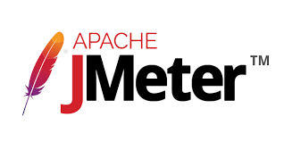

Szoftverfejlesztés és tesztelés
Szoftver fejlesztés
- A már létező szoftverek gyakran nem képesek egy vállalkozás összes szükségletét kielégíteni, ezért felmerülhet az igény egy saját tervezésű szoftverre.
- Az egyedi elképzelések alapján fejlesztett szoftverek nem tartalmaznak felesleges funkciókat, elemeket. A gyakorlat azt mutatja, hogy akár pár hónap alatt is képes megtérülni egy egyedi fejlesztésű folyamat támogató rendszer, mivel képes a vállalkozás hatékonyságát drasztikusan növelni, illetve költségeit csökkenteni.
- Egyedi szoftverfejlesztés közben, valamint minden lezár munkafázis után különböző teszteléseket végzünk, az átadás előtt azonban egy nagyobb és átfogóbb tesztelést szükséges elvégezni.
- Ebben a fázisban az elkészült szoftvert egészében vizsgáljuk. Összevetjük a specifikációban lefektetett terveket a megvalósult termékkel, kipróbálunk minden funkciót, illetve különböző eszközökön is kipróbáljuk a szoftvert a kompatibilitás és a megfelelő megjelenés érdekében.
- A belső tesztelést a felhasználói tesztelés követi. Amennyiben szükséges, elvégezzük a végső módosításokat az észrevételek alapján, majd, ha a terv és az elkészült szoftver megegyezik, a szoftver átadása következik.
Mi mindig a teljes erőnek és odafigyelésünket adjuk a tesztelésre és ezért a csapatunk csak maximum 3 szotverrrel dogoznak egyhuzamban.Ezzel garatáljuk a legmegfelelőbb és a legalaposabb tesztelést.
Szoftver tesztelés
tesztelési szervezet bizonyos érettségnél eléri azt a szintet, ahol magát az aktuális fejlesztésekhez tartozó teszttervezést, illetve a futtatás- és a hibakezelés-tevékenységet átadhatja akár egy szakértői külső félnek, aki előre egyeztetett SLA paraméterek (minőségi KPI-ok, idő KPI) mentén végzi el a feladatokat. Ezzel a lépéssel nagy teher kerül le a cég válláról: nem kell a teszteléshez saját erőforrást delegálni, nem kell azt menedzselni
A Leggyakrabban alkalmazott technológiák közé tartozik a:
- Jmeter 
- C#

- PHP

- Css

- MySQL